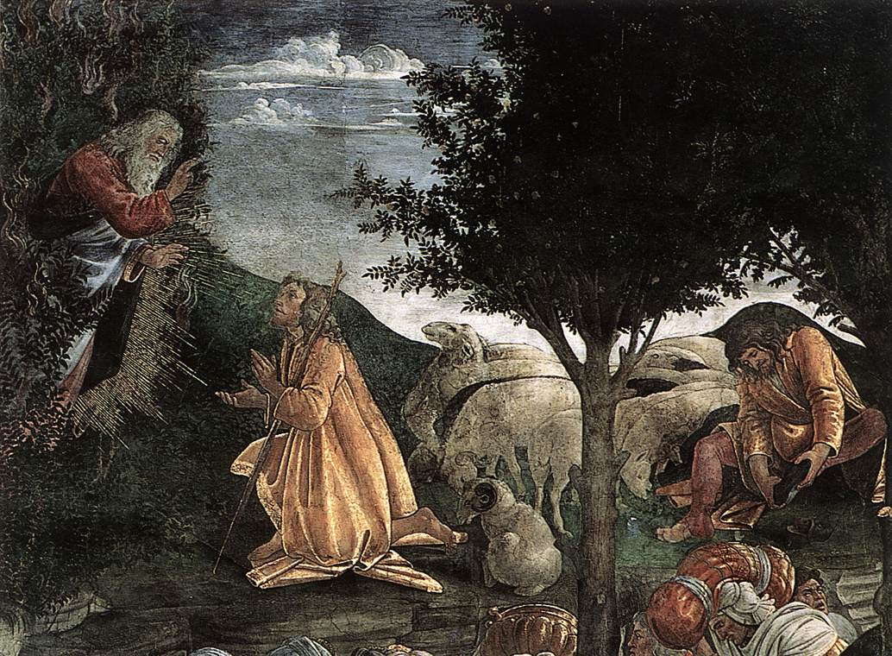
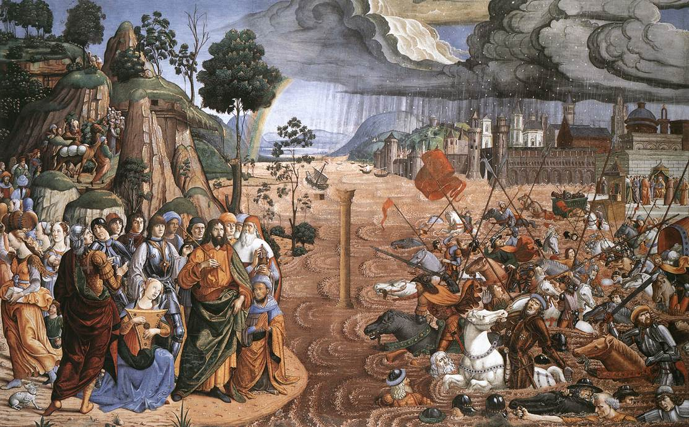
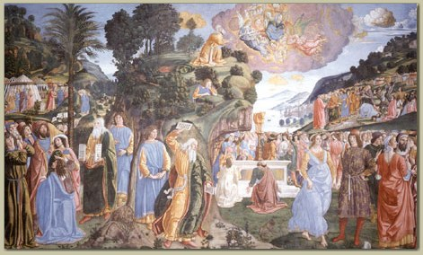

모세 성인
-  Scenes from the Life of Moses. Cappella Sistina, Vatican
-
모세 성인은 하느님의 명에 따라 이집트에서 종살이 중이던 이스라엘 백성을 탈출시키고, 하느님께 십계명을 받은 예언자다.
제1대리구 상하성모세본당의 주보인 성인은 성경에서도 각별한 위치를 차지하는 예언자다. ‘모세’는 성경 전체에 걸쳐 예수와 다윗 다음으로 가장 많이 등장하는 이름이다. 성인의 이름은 구약성경에서만 800번 이상 나오고, 신약성경에도 80번 가량 등장한다. 예수의 거룩한 변모 때에도 엘리야와 함께 성인이 나타난다.
성인의 일생은 성경에 자세히 서술돼 있다 성인은 이집트에서 이스라엘 백성들이 박해받던 시기에 태어났다. 당시 파라오는 히브리인들에게서 태어나는 모든 남자 아이를 죽이라고 명령했는데, 히브리인이었던 성인의 부모는 성인을 몰래 기르다 더 이상 숨겨 키울 수 없게 되자 왕골 상자에 성인을 넣고 강물에 띄웠다. 그리고 파라오의 딸이 이 왕골 상자를 발견해 성인을 양자로 삼았다.
-  Crossing of the Red Sea. Cappella Sistina, Vatican
-
청년이 된 성인은 강제 노동을 하고 있는 히브리인을 돕다 이집트인을 죽이고 미디안으로 달아나 생활했다.
미디안에서 성인은 불타는 떨기 속에 나타난 하느님을 만난다. 여기서 성인은 하느님의 명을 받고 이스라엘 백성들을 이집트 땅에서 끌어낸다.
성인은 여러 차례 파라오를 만나 이스라엘 백성들을 놓아줄 것을 요청하지만, 파라오는 거절했다. 이에 하느님이 모세를 통해 이집트에 10가지 재앙을 내렸고, 마지막 재앙을 이스라엘 백성이 피하게 하면서 ‘파스카 축제’를 제정했다. 마침내 갈대 바다를 가르고 바다를 건너며 이집트 탈출을 이뤄냈다.
-  Moses and the Tables of Law. Cappella Sistina, Vatican
-
성인의 탈출과정도 드라마틱하지만, 성인이 후대에도 끊임없이 언급된 큰 이유 중에 하나는 하느님께 직접 십계명,
즉 율법을 받았기 때문이다. 게다가 탈출기, 레위기, 민수기, 신명기 등 성인이 등장하는 성경은 이스라엘 공동체에 관한 방대한 법전이다.
복음서에도 여러 사람들이 ‘모세의 율법’을 예수에게 질문을 하고, 가르침을 받는 장면이 등장한다.
성인은 이집트를 탈출한지 석 달째 되는 초하룻날 시나이 산에서 하느님을 만나 계약을 맺는다. 그 계약의 말씀의 주된 내용이 바로 십계명이다. 성인은 단순히 하느님이 전한 계약을 이스라엘 백성에게 전하기만 한 것이 아니라 이 계명을 지키며 살아갈 수 있도록 이스라엘 백성들을 끊임없이 가르치고 이끌었다.
성인은 하느님의 길을 가르치는 역할뿐 아니라 40년에 이르는 광야에서의 삶에서 공동체를 유지하고 관리하는 지도자를 맡았고, 이민족과의 전투에서는 지휘자가 돼 백성들을 통솔하기도 했다. 성경은 이런 성인을 “이스라엘에는 모세와 같은 예언자가 다시는 일어나지 않았다”(신명 34,10)며 극찬한다.
그러나 성인의 리더십은 다름 아닌 겸손에 있었다. 하느님 앞에서 겸손했던 것은 말할 것도 없고, 백성들에게도 겸손했다. 하느님의 뜻을 거스르는 이스라엘 백성을 보면서도 벌하거나 억압하지 않고 쏟아내는 항의와 불만을 묵묵히 받아내는 지도자였다. 백성들이 성인을 죽이려고까지 했음에도 하느님 앞에서 백성의 고통을 호소했다. 민수기 12장 3절은 성인을 “땅 위에 사는 어떤 사람보다도 겸손”했다고 표현하고 있다. 성인이 오늘날까지도 위대한 지도자로, 위대한 예언자로 존경받는 것은 성인이 그 누구보다 겸손했기 때문이었던 것이다.
< 2019-08-12 가톨릭신문 이승훈기자>